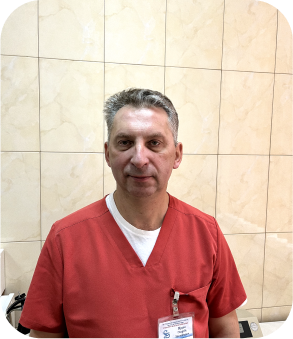
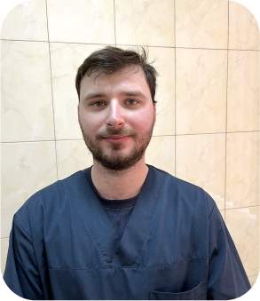
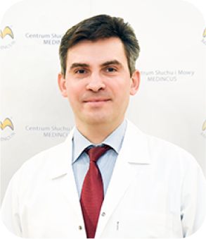

Лікарі
Наша команда лікарів завжди рада вас проконсультувати та призначити найкраще для вас лікування

Щурук Георгій Зіновійович
Отоларинголог
- Спеціалізація – отоларингологія, дитяча отоларингологія, сурдологія, ЛОР – онкологія.
- З 1996 року працює лікарем–оториноларингологом Волинської обласної клінічної лікарні.
- Володіє сучасними методами діагностики і лікування ЛОР-хворих.
- Володіє технікою всіх типових і атипових ЛОР-операцій.
- Має 53 наукові друковані роботи.

Щурук Антон Георгійович
Отоларинголог
- Спеціалізація – отоларингологія, дитяча отоларингологія, сурдологія, ЛОР – онкологія.
- В 2022 році закінчив Тернопільський національний медичний університет імені І.Я. Горбачевського
- Володіє сучасними методами діагностики і лікування ЛОР-хворих.
- Володіє технікою всіх типових і атипових ЛОР-операцій.
- Володіє сучасними методами діагностики та лікування СОАС та синдрому хропіння.

Щурук Олександр Зіновійович
Отоларинголог
- Спеціалізація – отоларингологія, дитяча отоларингологія, сурдологія, ЛОР-онкологія.
- Висококваліфікований лкар з 23-річним стажем
- З 2000-го року постійно підвищує свій професійний рівень на міжнародних конференціях та конгресах
- Стажувався в Клініці Riesa-Großenhain та в Університецькій клініці Кельна.
- Проходив навчання за програмою Open World в США.